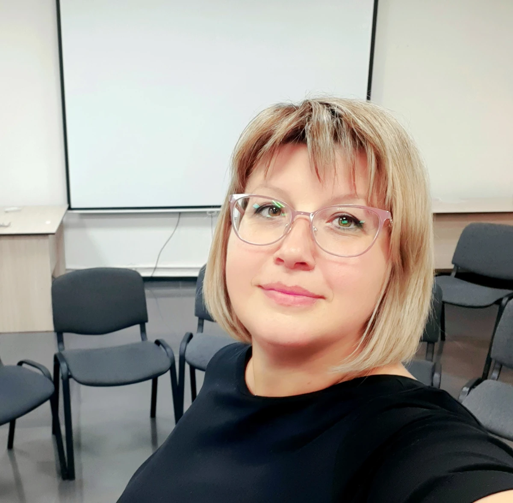

Индивидуальная работа
Пространство для разговора о себе, своих чувствах, отношениях и жизненных ситуациях.
КРАСНОЯРСК · ОНЛАЙН
Пространство для разговора о вас
Психолог. Гештальт-терапевт.
О чувствах, отношениях и том, что важно вам.
Можно начать с того, что сейчас есть.
Очно в Красноярске и онлайн.
Индивидуально, с семьями и группами.

В своём темпе.
С вниманием к себе.
Для первого обращения достаточно сказать,
что вы хотите обсудить консультацию.
Свой запрос можно сформулировать вместе.
Марина Александровна Белимова
Психолог, гештальт-терапевт
В психологии — с 2004 года.
В работе — с вниманием
к человеку и его отношениям.
Марина — аккредитованный гештальт-терапевт, сертифицированный семейный терапевт и сертифицированный терапевт по работе с зависимостями в гештальт-подходе.
В её практике — индивидуальные консультации, работа с детьми, подростками, парами и семьями. Марина также ведёт терапевтические группы в Красноярске.
год начала работы в психологии
по профессиональной анкете
В анкете Марины представлены
следующие направления практики.
Пространство для разговора о себе, своих чувствах, отношениях и жизненных ситуациях.
Работа с парами, семьёй и детско-родительскими отношениями.
Обсуждение ситуации ребёнка или подростка и подходящего формата психологической работы.
Терапия зависимостей в гештальт-подходе — одно из подтверждённых направлений подготовки Марины.
Групповая работа. Темы, состав и условия участия можно уточнить лично.
Не нужно заранее выбирать точную категорию.
Можно просто начать разговор.
03 / ГЕШТАЛЬТ-ПОДХОД
Что со мной происходит?
Что я чувствую?
Что для меня важно?
Гештальт-подход обращает внимание на переживания человека, его потребности и отношения с окружающими. На встречах можно исследовать свой опыт и то, как вы проживаете происходящее.
Как именно может строиться работа с вашим запросом, можно обсудить с Мариной при знакомстве.
Сведения из профессиональной анкеты.
Статусы и программы — в формулировках источника.
В анкете сообщества «Гештальт-подход» указан статус «Терапевт» с 27 мая 2024 года.
Сертифицированный семейный терапевт. Сертифицированный терапевт по работе с зависимостями в гештальт-подходе.
Марина работает очно и онлайн.
Условия встречи согласуете лично.
ЛИЧНАЯ ВСТРЕЧА
Встреча в кабинете. Точный адрес, время, продолжительность и стоимость консультации уточните у Марины до записи.
Обсудить встречу ↗Позвоните, напишите на почту или в VK. Для первого сообщения достаточно желания обсудить консультацию.
Уточните подходящий формат, время, стоимость и вопросы, которые важны до начала работы.
Первая встреча — возможность рассказать о ситуации, задать вопросы и обсудить дальнейшую работу.
07 / ЧАСТЫЕ ВОПРОСЫ
Оставить место для вопросов —
тоже часть знакомства.
Для первого обращения не обязательно иметь готовую формулировку. Можно написать, что вы хотите обсудить консультацию, и вместе прояснить, с чем вы приходите.
Да, в профессиональной анкете Марины указана онлайн-работа. Сервис для связи, время и другие условия встречи согласуете лично.
Да. В анкете представлены работа с парами, семьями и детско-родительскими парами. Подходящий состав встречи можно обсудить при обращении.
Стоимость, продолжительность и условия консультации лучше уточнить у Марины до записи. На этом сайте оплата и бронирование не предусмотрены.
Для первого контакта достаточно представиться и сообщить, что вы хотите обсудить встречу. Личные подробности можно оставить для консультации.
ПРОСТРАНСТВО ДЛЯ ВАШЕЙ ИСТОРИИ
Свяжитесь удобным способом,
чтобы обсудить консультацию.
Очно в Красноярске и онлайн.
Время и условия встречи согласуете лично.